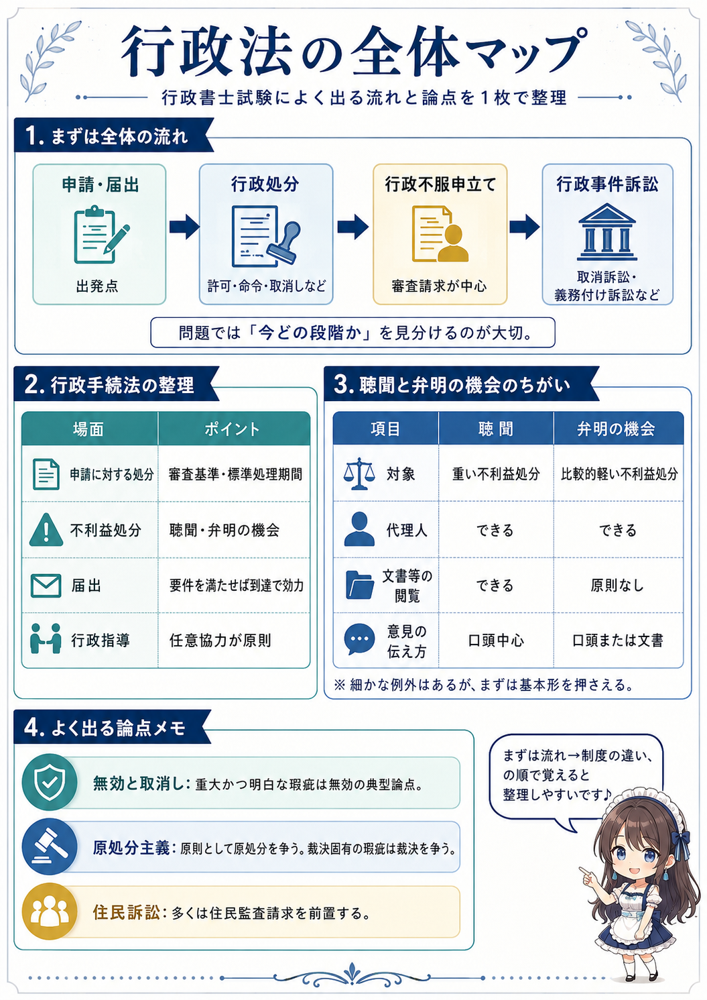
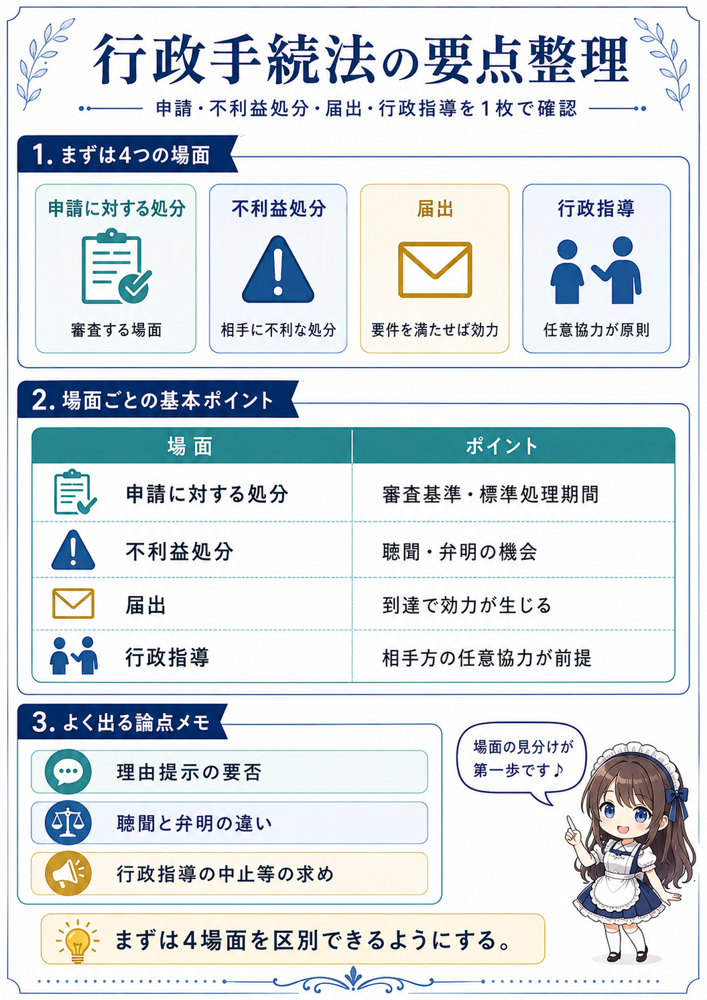
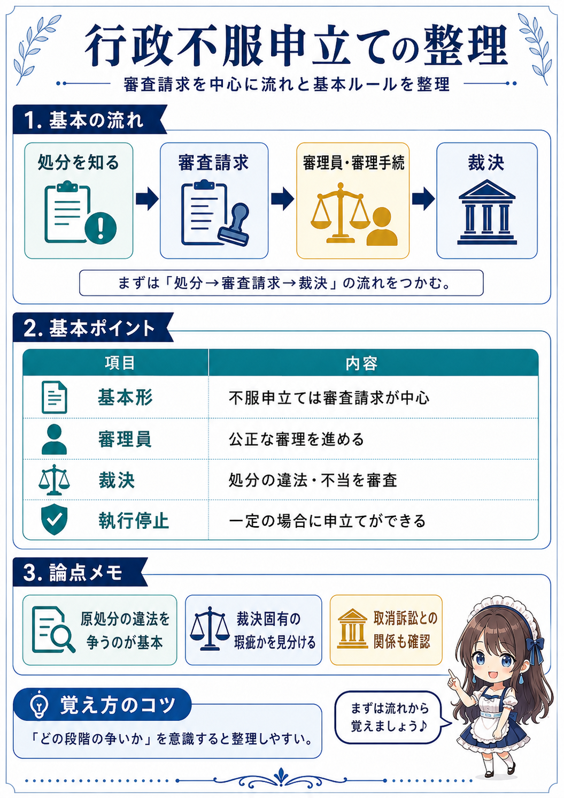
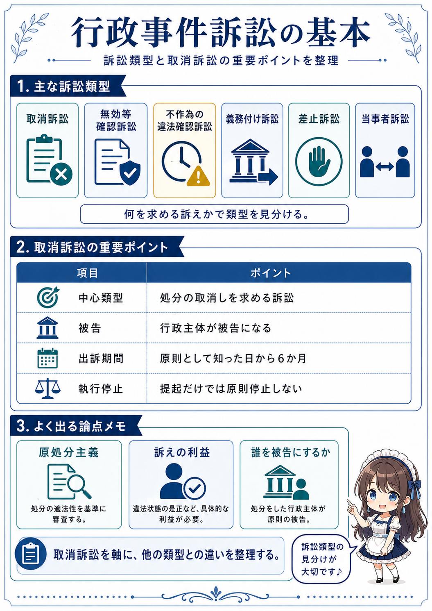
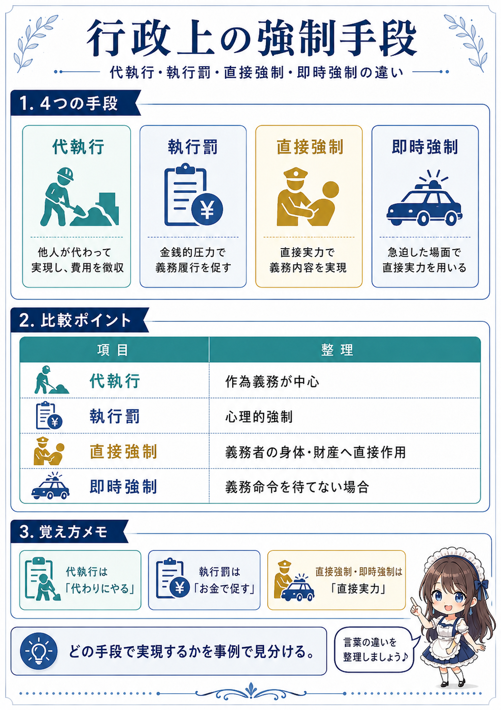
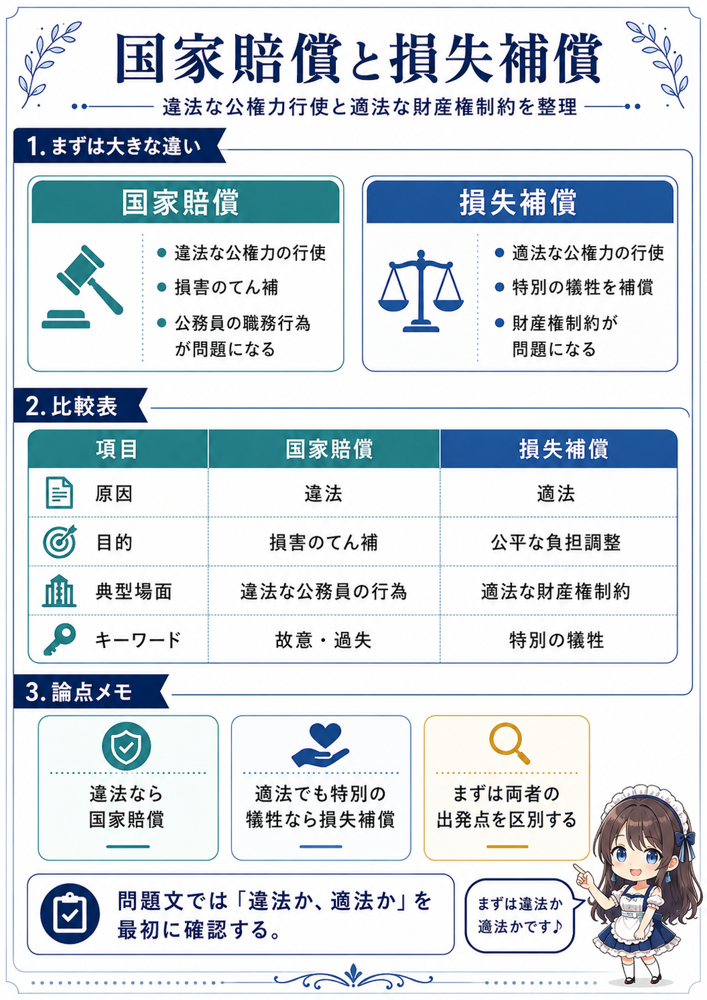

全分野20年分の保存件数を確認中
本番掲載件数を確認中です。 学習カードの件数を確認中です。 保存済み素材と本番掲載済み教材は分けて数えます。
STUDY CARDS
頻出論点を○×で解く
A・B二案・Cで問題の意味をつかんでから答えます。回答後は、解説と実際に出た肢を続けて確認できます。
この問題の履歴正解 0 / 不正解 0保存先を確認中…
おまかせでは、正解が不正解より3回多くなった問題を「習得済み」として出題から外します。全問題モードならいつでも復習できます。回答後に「絶対覚えた」を押した問題は、どの出題範囲でも出しません。
0.0秒
この問題の過去の回答
正解 0回不正解 0回1問 —
カードID
色の意味
青（だれ）→ 下線（条件）→ 黄色（結論）の順に目で追うと、文の意味を組み立てられます。
- 保証人 だれ・立場
- 1か月以上 条件・期間
- 追認 用語・制度
- 取り消せない 結論
- 逆にすると誤り ひっかけ
- 民法145条 根拠・補足
A 標準問題文
B やさしい言い換え
現在の言い換え
もうひとつの言い方
C 短い読み替え
上の文章は、法律のルールに合っている？
← または F ＝○ → または J ＝× スペース ＝次へ
あなたが選んだ答え
この文章の正しい判定
正しい形で覚えると
この問題の正答率習得済み—
学習カード全体の正答率—
一言で覚える
いまの手ごたえ
この問題の扱い
① 普通の解説
② 深掘り解説
制度の背景・理由
試験のひっかけ
具体的な場面
③ 根拠・確認時点
④ 常識力
見分け方
セット終了
VISUAL NOTES
行政法を図で整理する
制度の流れや違いを見比べるための解説図です。問題の解説中には表示せず、このページだけにまとめています。






PAST QUESTIONS · ORIGINAL
過去問原文をそのまま解く
問題文と選択肢は取得した過去問データです。回答はこのサーバーに保存されます。
出題対象—
選択式の正答率—
3回多く正解した問題は「習得済み」として、おまかせ出題から外れます。全問題モードならいつでも出せます。
あなたの回答
正解
この問題の正答率—
選択式の正答率—
WRITTEN ANSWER
記述式を実際に書く
40字程度の答案をここで作り、公式答案または取得元の答案例と比べられます。
答案例
試験実施機関の公式答案
取得元に掲載された答案例
答案例と比べて、必要な内容をだいたい書けた？
この記述の「書けた」率—
記述式全体の「書けた」率—
EDITORIAL CARDS
A・B二案・Cと解説
ここは過去問をそのまま並べる画面ではなく、同じ論点を読みやすく作り直した学習カードです。件数を読込中です。
カードID
A 標準問題文
B やさしい言い換え
現在の言い換え
もうひとつの言い方
C 短い読み替え
この文章の判定
普通の解説
深掘り解説
制度の背景・理由
試験のひっかけ
具体的な場面
常識力
SECOND OPINION
Claude Fableの法令監査結果
2026年7月18日時点の現行法をAIに調べさせた結果です。令和8年度試験の基準日（4月1日）と同じ意味ではありません。
現在の監査範囲を確認中
表示中の結果はいずれもAI候補で、最終承認ではありません。問題形式ごとの対象範囲は監査データ側で管理します。
過去問時の判定
Claudeの現行法判定
先に見る注意点
Claudeの確認メモ
参照候補
FINAL CHECK
AIが迷った候補だけ確認する
候補件数を確認中です。
お願いするのは判断が割れたものだけ
もし候補が残っていたら、この2つを一緒に覚えたいか見てください
- 誰についての話か
- 条件や時期は同じか
- 最後の結論は同じか
- 「必ず・原則・できる」の強さは同じか
AIを含む確認済み0 / —
過去問の肢 1
と
過去問の肢 2
自動計算で「似ている」と抽出された理由
この2つをどう整理しますか？
どんな関係に近い？
DATA STATUS
「本番へ昇格」の意味
あなたに専門的な承認作業を頼む、という意味ではありません。
全分野の過去問を保存
20年分の保存件数を読込中です。問題文・取得元解説は本番画面と分離して保管します。
保存・構造化済み似た肢を仕分け
候補件数を確認中です。
AI判定を反映中法律上の正しさを確認
試験基準日で正しいかを、一次資料・公式答案・AI監査を分けて確認します。
一部進行中学習カードに編集
確認できた論点から、A・B二案・C・普通の解説・深掘り・常識力を作ります。
件数を読込中あなたに確認してほしいこと
類似確認では
AIがどうしても決めきれなかった候補だけです。0件なら何もしなくて大丈夫です。
解説カードでは
Bの文章が、頭が回らないときにも読めるか。意味がずれていないか。
記述式では
実際の入力欄・字数表示・答案の見比べ方が使いやすいか。
SOURCE INVENTORY
保存している過去問データ
集計を読込中です。
| 科目 | 問題 | 通常5肢 | ○×候補 | 多肢選択 | 記述 |
|---|
「問題」と「肢」は別です。通常5肢択一は1問から5肢あります。組合せ問題・個数問題・没問などは、正解番号だけでは各肢の○×を安全に決められないため候補数から外します。